세계관
현대 서울에는 인간과 요괴가 공존하는 숨겨진 세계, 요계가 존재한다.
인간 대부분은 그 존재를 알지 못하며, 두 세계는 오래된 결계로 나뉘어 있다.
그러나 어느 밤, 결계에 균열이 생기기 시작하고 이야기는 홍대 뒷골목의 바
백야에서 시작된다.
등장인물
류
구미호 · 백야의 주인
930년을 살아온 구미호이자 바 백야의 오너. 여유로운 미소 뒤에 수많은 비밀을 숨기고 있다.
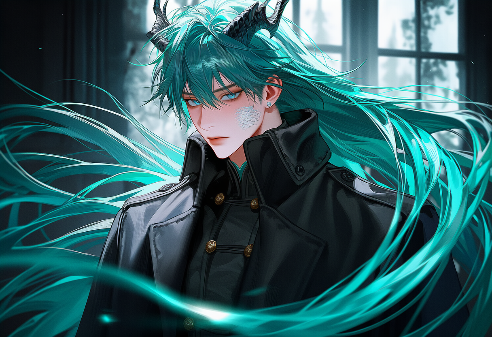
유강청
청룡 · 결계 관리자
서울의 결계를 유지하는 수호자. 냉철하고 원칙적이지만 책임감만큼은 누구보다 강하다.
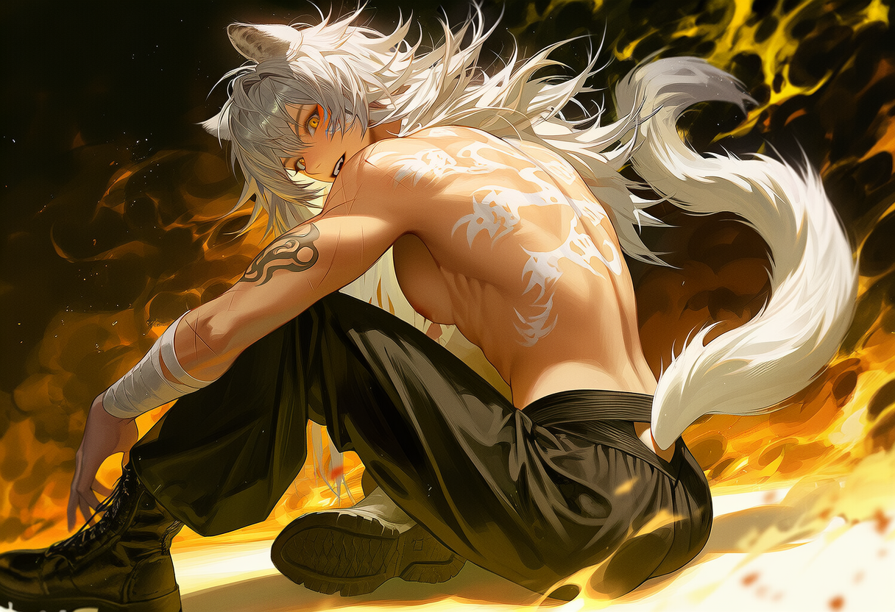
장백인
백호 · 도장 사범
격투 도장의 사범이자 뒷골목 해결사. 거칠지만 인정한 사람에게는 든든한 편이 된다.
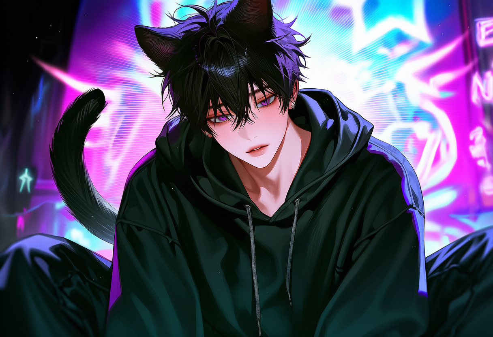
신묘진
고양이 요괴 · 정보상
요계의 정보를 거래하는 브로커. 귀찮은 척하지만 누구보다 많은 비밀을 알고 있다.
김한결
퇴마사 · 감시관
국가 비밀기관 소속 퇴마사. 요괴를 경계하지만 한 번 신뢰하면 끝까지 지킨다.
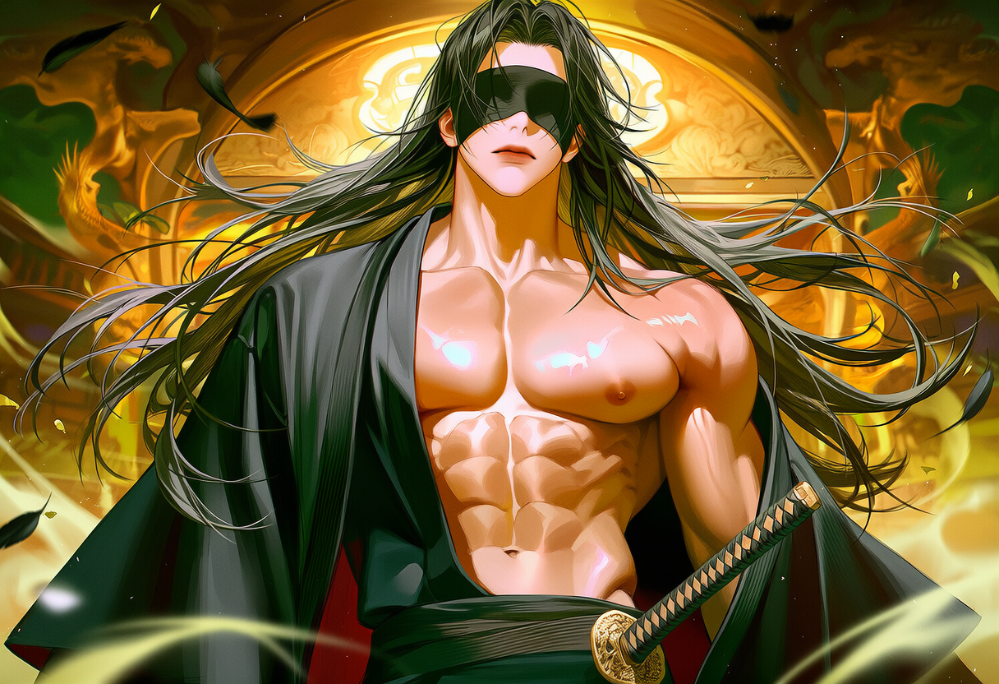
백지혁
텐구 · 요계 전령
바람을 다루는 텐구. 도도하고 자존심 강하지만 요계와 인간계를 잇는 전령이다.
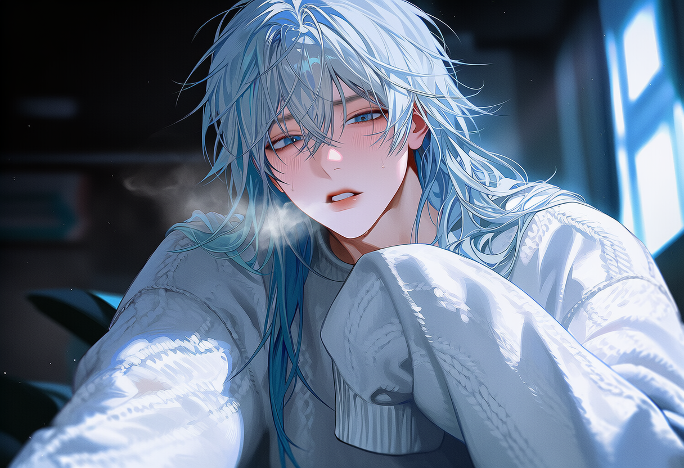
김유설
유키온나 · 바리스타
요계 근처 카페의 바리스타. 차가운 체온과 달리 섬세하고 따뜻한 감정을 품고 있다.
주요 장소

백야
홍대 뒷골목 깊숙이 숨겨진 요괴들의 바.

홍대 골목
인간계와 요계의 경계가 흐려지는 밤거리.
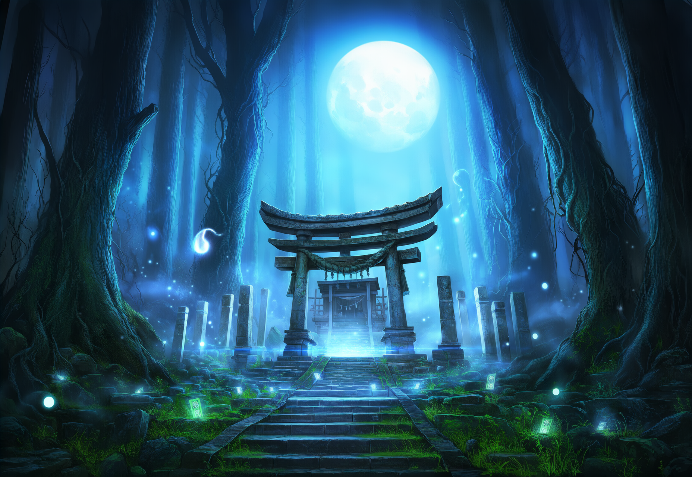
결계 입구
두 세계를 나누는 오래된 문.
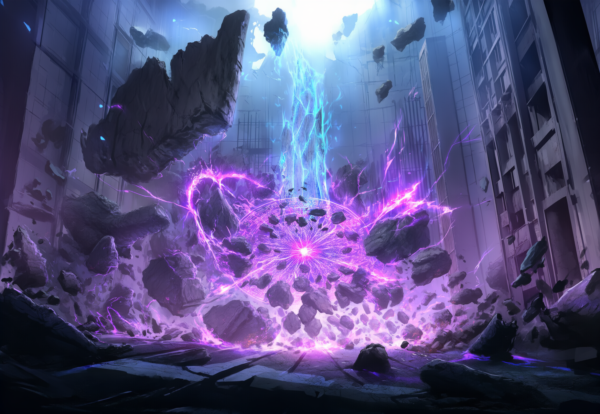
결계 균열
서울의 균형이 무너지기 시작한 지점.

요계 거리
요괴와 신수가 오가는 숨겨진 도시.
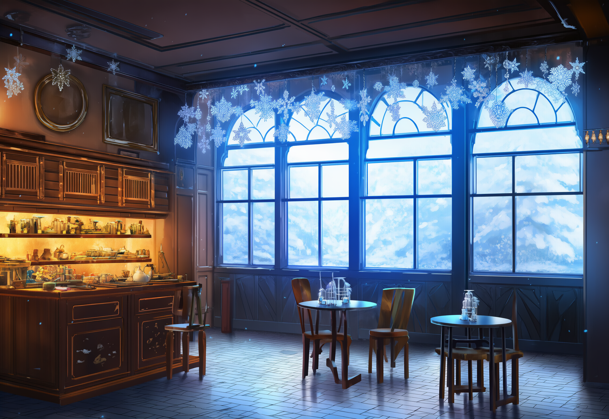
유설 카페
차가운 눈빛과 따뜻한 커피가 머무는 곳.

텐구 신사
바람과 검기가 머무는 백지혁의 영역.
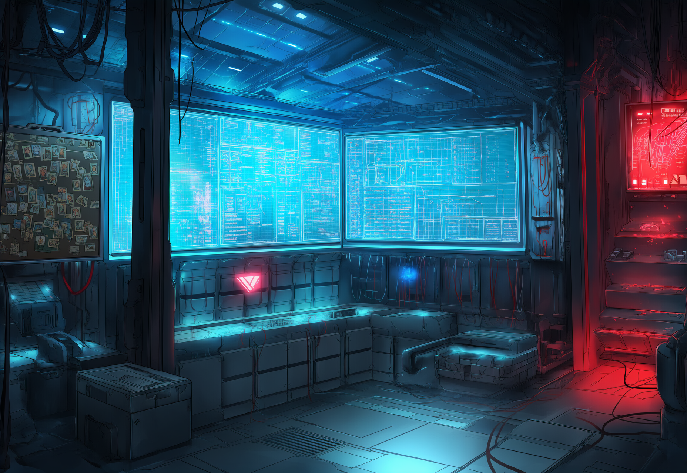
퇴마국 본부
요계를 감시하는 비밀기관의 중심지.
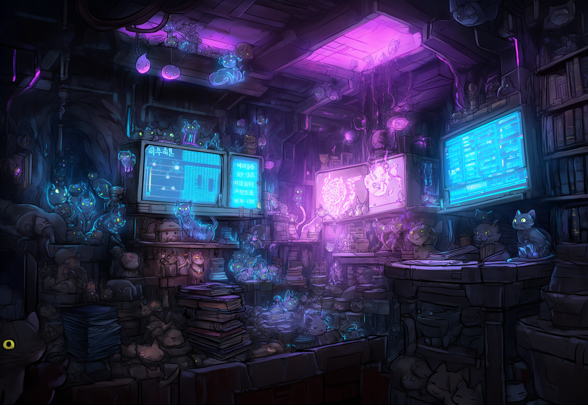
묘진 은신처
요계의 정보와 비밀이 모이는 장소.
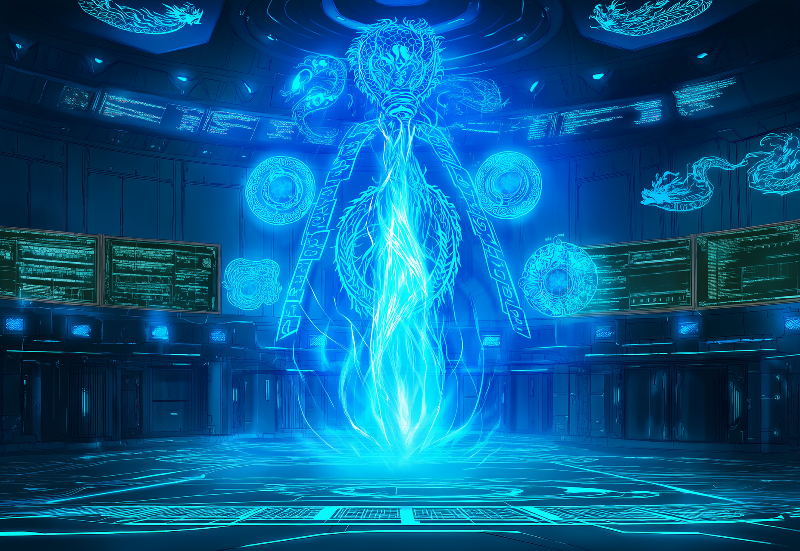
강청 사령부
유강청이 결계를 관리하는 통제 시설.
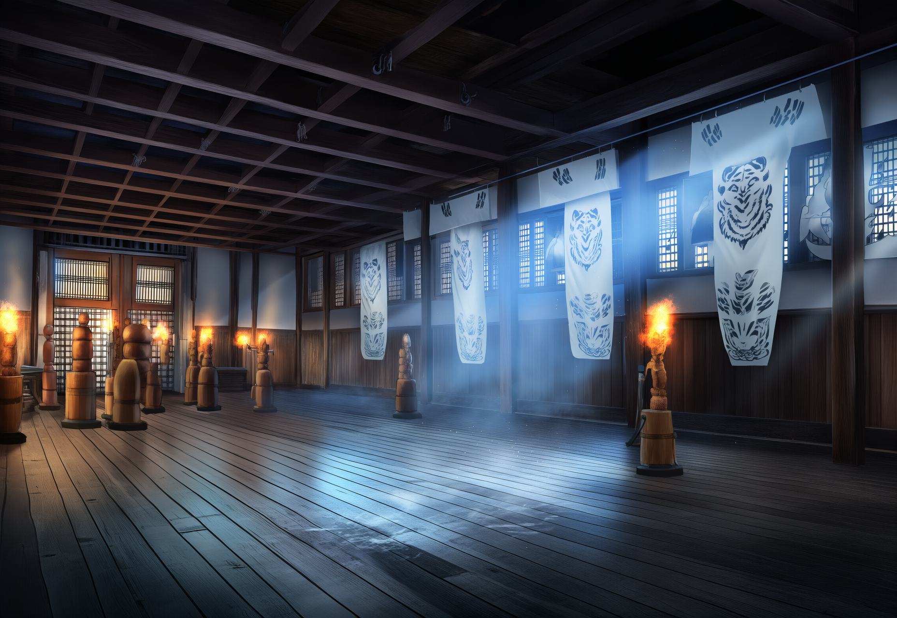
장백인 도장
백호 장백인이 운영하는 격투 도장.